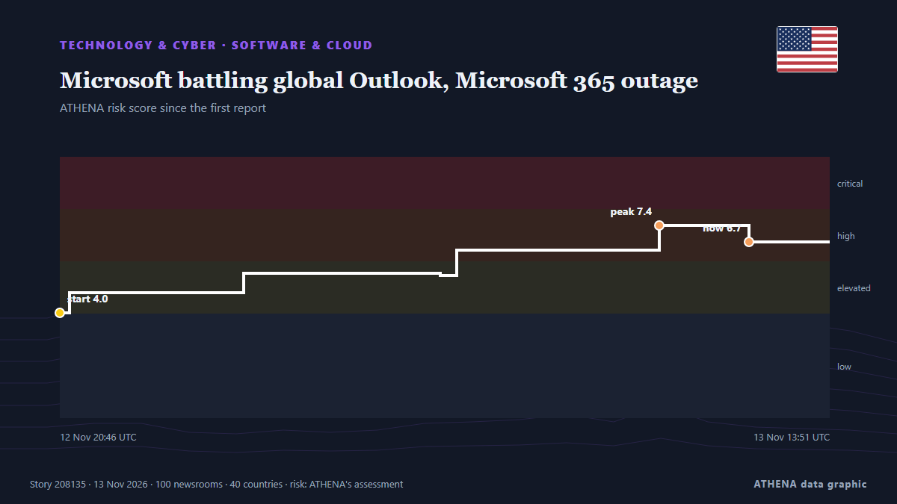

Microsoft battling global Outlook, Microsoft 365 outage

UPDATED with latest company comments: Earlier this evening Microsoft posted an update on the outages to its 365 platform noting “positive results with our efforts to restart affected infrastructure… από Deadline
Αναφέρθηκε ανεξάρτητα από 101 μέσα σε 40 χώρες από τις 12 Νοε, πρώτο το CNA (Channel NewsAsia)· η κάλυψη εξασθενεί. Το ATHENA εκτιμά τον κίνδυνο υψηλό (6.7/10), κυρίως λόγω της σοβαρότητάς του και της εμβέλειάς του. Βεβαιότητα 85% (υψηλή): το επιβεβαιώνουν 101 ανεξάρτητα μέσα, μέση αξιοπιστία 72%. Μέσα ανά χώρα: Ηνωμένες Πολιτείες (13), Αυστραλία (5), Σιγκαπούρη (4). Κάλυψη: 12 Νοε έως 13 Νοε, 8 ώρες.
Γιατί έχει σημασία: Οι εξελίξεις στην τεχνολογία και την κυβερνοασφάλεια διαμορφώνουν την ασφάλεια, τον ανταγωνισμό και τους κανόνες της ψηφιακής ζωής.
Τι άλλαξε: 141 νέες αναφορές από 97 μέσα στο 24ωρο έως 13 Νοε.
Πρώτη διατύπωση: Microsoft Outlook Goes Down In 365 Outage, Paralyzing Business Communication
Οι τίτλοι των ειδήσεων παρουσιάζονται στα αγγλικά, όπως δημοσιεύτηκαν.
Πώς να διαβάσετε αυτή τη σελίδα
- Τι διαβάζετε
- 101 μέσα σε 40 χώρες ανέφεραν αυτό το γεγονός. Οι αναφορές παρακάτω εμφανίζονται με τη σειρά που δημοσιεύτηκαν· κάθε τίτλος ανοίγει το αρχικό άρθρο. Το ATHENA δεν γράφει δικά του ρεπορτάζ.
- Η εκτίμησή μας
- Για την καταγραφή — Οι αναφορές περιγράφουν ένα ολοκληρωμένο, εσωτερικό, εμπορικό ή προσωπικό ζήτημα. Το καταγράφουμε ώστε να βλέπετε ποιος το ανέφερε και πότε. Δεν παρακολουθούμε εδώ κίνδυνο ευρύτερης σύγκρουσης.
- Πόσα στοιχεία υπάρχουν
- Ισχυρή Πολλά ανεξάρτητα μέσα σε πολλές χώρες περιγράφουν το ίδιο γεγονός.
Αφού αφαιρεθούν οι επαναλήψεις, τα άσχετα και τα παλιά στοιχεία, υπολογίζονται 32 από τις 40 αναφορές που παρατίθενται· το 100% των τίτλων αντιστοιχεί στο γεγονός.
- Τι δεν σημαίνει
- Το ATHENA μετρά πώς καλύπτεται ένα γεγονός, όχι αν είναι αληθές. Δεν είναι πρόβλεψη, κρίση για το ποιος έχει δίκιο ή συμβουλή.
- Τι θα την άλλαζε
- Αναφορές από άλλα ανεξάρτητα μέσα που δείχνουν διαφορετική εξέλιξη, ή σαφής επιβεβαίωση ή διάψευση από επίσημη πηγή.
Εκτίμηση R2 · ανανεώνεται με κάθε ενημέρωση της σελίδας. Το ATHENA δεν έχει δημοσιεύσει ακόμη ιστορικό επιδόσεων για αυτές τις εκτιμήσεις· όταν το κάνει, θα συνδέεται εδώ.
Με μια ματιά
Επιλέγεται, βαθμολογείται και γράφεται από τη δημοσιευμένη μεθοδολογία του ATHENA. Κανένας συντάκτης δεν παρεμβαίνει σε μεμονωμένα γεγονότα. Πώς παράγεται ›
| 12 Nov 18:32 UTC | 6 |
|---|---|
| 12 Nov 19:32 UTC | 6 |
| 12 Nov 20:32 UTC | 8 |
| 12 Nov 21:32 UTC | 8 |
| 12 Nov 22:32 UTC | 3 |
| 12 Nov 23:32 UTC | 2 |
| 13 Nov 00:32 UTC | 4 |
| 13 Nov 01:32 UTC | 3 |
| 13 Nov 02:32 UTC | 4 |
| 13 Nov 03:32 UTC | 8 |
| 13 Nov 04:32 UTC | 9 |
| 13 Nov 05:32 UTC | 10 |
| 13 Nov 06:32 UTC | 13 |
| 13 Nov 07:32 UTC | 9 |
| 13 Nov 08:32 UTC | 18 |
| 13 Nov 09:32 UTC | 9 |
| 13 Nov 10:32 UTC | 6 |
| 13 Nov 11:32 UTC | 5 |
| 13 Nov 12:32 UTC | 5 |
| 13 Nov 13:32 UTC | 3 |
| 13 Nov 14:32 UTC | 1 |
| 13 Nov 15:32 UTC | 0 |
| 13 Nov 16:32 UTC | 1 |
| 12 Nov 20:46 UTC | 4.0 |
|---|---|
| 12 Nov 20:59 UTC | 4.8 |
| 13 Nov 00:52 UTC | 5.5 |
| 13 Nov 05:13 UTC | 5.5 |
| 13 Nov 05:35 UTC | 6.4 |
| 13 Nov 10:05 UTC | 7.4 |
| 13 Nov 12:04 UTC | 6.7 |
| 13 Nov 16:35 UTC | 6.7 |
Γιατί αυτοί οι αριθμοί
Σημασία
Κίνδυνος
Βεβαιότητα
Η κάλυψη — ποιος το ανέφερε και πότε
ο τίτλος όπως δημοσιεύτηκε · ανοίγει το πρωτότυπο- CNA (Channel NewsAsia) · ΣιγκαπούρηMicrosoft 365, Outlook down for thousands of US users, Downdetector shows
- Deadline · Ηνωμένες ΠολιτείεςMicrosoft Outlook Still Down In 365 Outage: Company Sees Sporadic Improvements, Though No Sustained Recovery
- TechCrunch · Ηνωμένες ΠολιτείεςMicrosoft’s Outlook email hit by new outage
- The Canadian Press (via CityNews) · ΚαναδάςWidespread outage hits Outlook, other Microsoft apps
- NBC News (World) · Ηνωμένες ΠολιτείεςMicrosoft services hit by major outage across the world
- ABC News Australia · ΑυστραλίαMicrosoft platforms including Outlook suffering widespread outages
- ZDNet · Ηνωμένες ΠολιτείεςSeveral Microsoft services appear to be down – what we know
- Wired · Ηνωμένες ΠολιτείεςMajor Microsoft Outlook Outage Leaves People With Email Jobs Unable to Email
- Nile Post · ΟυγκάνταMicrosoft struggling to restore service as global outage affects Outlook and Teams
- BleepingComputer · Ηνωμένες ΠολιτείεςMassive Microsoft 365 outage disrupts Outlook, Teams, Copilot worldwide
- Forbes Business · Ηνωμένες ΠολιτείεςMicrosoft 365 Down: Tech Giant Says Server Failures Causing Disruption
- ABC News Australia · ΑυστραλίαLive: Microsoft 'aggressively pursuing' solution to major outage
- Cyprus Mail · ΚύπροςMicrosoft outage drags on for hours, disrupting Outlook, Teams for businesses and governments
- SecurityWeek · Ηνωμένες ΠολιτείεςMicrosoft 365 Outage Disrupts Outlook, Exchange Online and Teams
- Al Jazeera English · ΚατάρMicrosoft working ‘urgently’ to fix outages
- DW English · ΓερμανίαMicrosoft reports mass outages in US, impacting customer accessibility
- Free Malaysia Today · ΜαλαισίαMicrosoft 365, Outlook down for thousands of US users
- Sydney Morning Herald · ΑυστραλίαMicrosoft’s attempts to resolve major outage ‘not working as expected’
- RTÉ News · ΙρλανδίαMicrosoft connectivity issues across 'multiple regions'
- SBS News · ΑυστραλίαMicrosoft services not 'fully returned to baseline' as recovery from outage continues
- Fast Company · Ηνωμένες ΠολιτείεςOutlook is down. Exhausted working Americans are begging Microsoft to take its time bringing it back up
- The Independent · Ηνωμένο ΒασίλειοIs Outlook down? Widespread outage hits Microsoft and OpenAI
- The Guardian · Ηνωμένο ΒασίλειοMicrosoft scrambles to fix global outage affecting Teams and Outlook
- CBC News (alternative feed) · ΚαναδάςMicrosoft outage continues as planned fixes are not working as expected, company says
- The Straits Times · ΣιγκαπούρηMicrosoft races to fix Outlook on one of its longest outages
- CNBC World · Ηνωμένες ΠολιτείεςWidespread Microsoft outage continues, taking down Outlook and other 365 services
- The Hollywood Reporter · Ηνωμένες ΠολιτείεςMicrosoft Goes Down, and the Media Business Takes Off Early
- Stuff · Νέα ΖηλανδίαMicrosoft says they see ‘stabilisation’ as outage causes global disruption
- The Business Times · ΣιγκαπούρηMicrosoft outage drags on for hours, disrupting Outlook, Teams for businesses and governments
- Sydney Morning Herald · ΑυστραλίαGlobal outage for Microsoft
- The Verge · Ηνωμένες ΠολιτείεςMicrosoft Outlook is still down
- Mainichi (English) · ΙαπωνίαIs Outlook down? Widespread outage hits Microsoft email and other apps
- Stuff · Νέα ΖηλανδίαHouse move thrown into limbo by Microsoft outage
- Times of India · ΙνδίαMicrosoft begins restoring services after global outage hits 365 suite
- NPR · Ηνωμένες ΠολιτείεςIs Outlook down? Widespread outage hits Microsoft email and other apps
- BusinessWorld · ΦιλιππίνεςMicrosoft outage drags on for hours, disrupting Outlook, Teams for thousands
- NDTV · ΙνδίαGlobal Outage Hits Microsoft, Outlook, Other 365 Services Down
- Le Monde (English) · ΓαλλίαMicrosoft starts seeing 'improvements' after global Outlook outage
- CNA (Channel NewsAsia) · ΣιγκαπούρηMicrosoft Outlook outage: Disruptions hit workers worldwide amid setback in recovery efforts
- Khaosod English · ΤαϊλάνδηIs Outlook down? Widespread outage hits Microsoft email and other apps